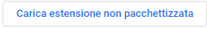

Installa l'estensione chrome B to 🅱️
Puoi installarla attraverso il setup da qui
Oppure
Per iniziare, scarica questo file zip, quindi estrailo in una cartella.
Dopo vai su chrome://extensions, o su qualsiasi altro dominio del tuo browser basato sul motore webkit(ad esempio opera://extensions per Opera o edge://extensions per Edge Webkit) e abilita la Modalità Sviluppatore.
Quindi clicca su  e seleziona la cartella in cui hai precedentemente estratto il file zip, quindi avrai la tua nuova estensione.